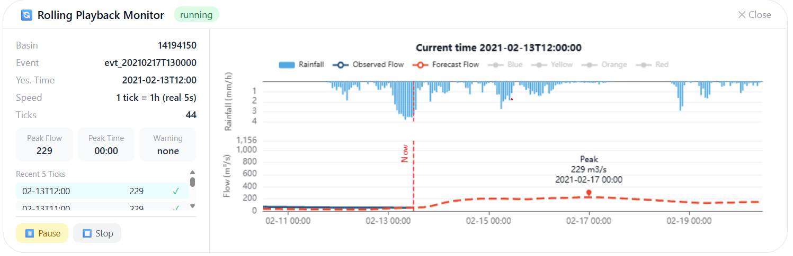
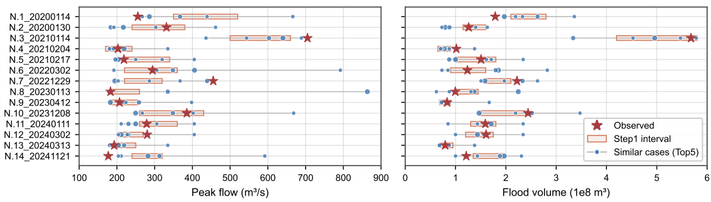
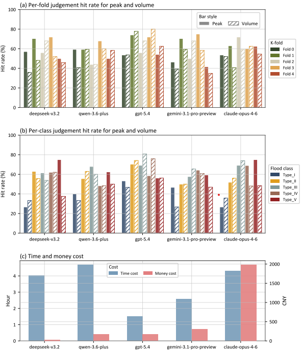

It proves HydroAgent already has a public narrative.
The site no longer has to rely on abstract future claims because the project has already been framed for a major geoscience audience.

This page consolidates the talk framing, confirmed title, and presentation figures already used to support HydroAgent's early public credibility.
Title confirmed from the submitted deck: "Is it ready to apply Large Language Models to frontline hydro practice? Taking the flood forecasting agent as an example."
The site no longer has to rely on abstract future claims because the project has already been framed for a major geoscience audience.
The presentation centers on frontline flood practice, judgment capture, and the role of LLMs inside a constrained hydrological workflow.
For site visitors, the deck matters because it shows workflow shape, benchmark evidence, and a real interface surface.
These figures are the public results layer already visible in the current site build.



